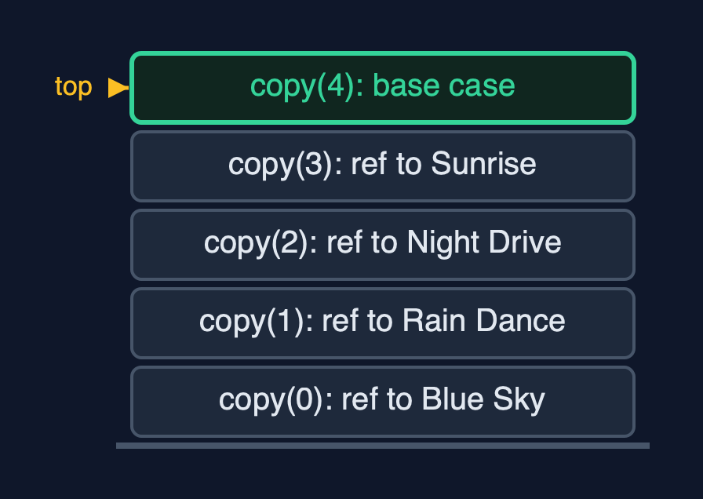
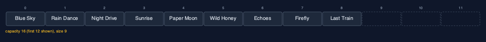
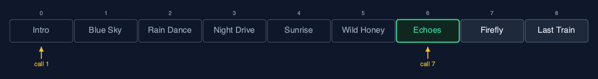
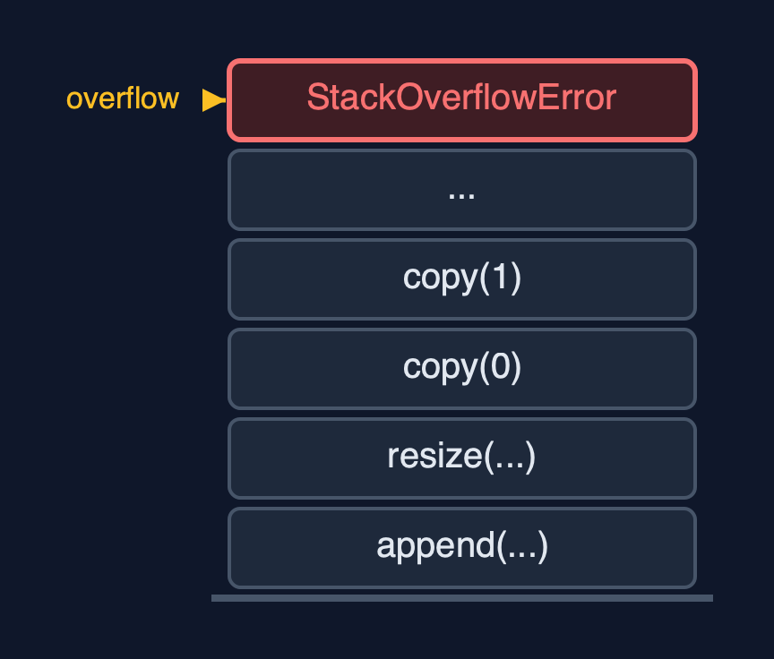

Dynamic Array (Generic, Recursive), Explained
In one sentence
The generic recursive dynamic array stores references to any type, finds them with equals, and does every linear pass as a recursion, so its time is unchanged and its extra space is one frame per element.
The picture

A recursive resize copies references: copy(0) ... copy(3), then the base case copy(4)
The everyday idea
Picture a warehouse list of addresses being copied onto a sheet twice as long by a line of helpers. The first helper copies line 0 and asks the next helper to copy the rest, then waits. Each helper copies one address and waits for the others. The furniture never moves; only addresses are copied. When a helper finds no lines left, everyone can go home. A list of a million lines would need a million helpers waiting in the corridor at once.
The 5 acts
Act 1: A recursive copy of references
With four songs the playlist is full. Appending "Paper Moon" resizes it to eight places, and the copy is recursive: copy(0) copies the reference to Blue Sky and calls copy(1), and so on, until copy(4) finds nothing left. Four frames at the deepest point. Because references are copied, the Song objects are untouched: index 0 of the new array holds the very same Blue Sky object.

Four copy calls waiting, each having copied one reference Here is the call stack. Four copy calls, each holding one reference. On top, the base case.
What the demo printed:
GenericRecursiveDynamicArray<Song>: capacity 4, size 4, full
copy(0): newArr[0] = reference to Blue Sky, then copy(1)
... Rain Dance, Night Drive, Sunrise
copy(4): no references left <- base case
append(Paper Moon (2:56)): 4 references copied at depth 4; index 0 is still the same Song: trueAct 2: Growing, and any type
Four more songs fill the array; the ninth resizes it again to 16, copying 8 references 8 frames deep. Twelve references copied since the first resize: the same count as every dynamic array here. The same class also holds play counts as Integer: traversing five of them goes five calls deep.

Nine songs in sixteen places, after two recursive resizes Here is the playlist, nine songs in sixteen places.
What the demo printed:
9 songs: 2 resizes, capacity 16, 12 references copied since the first resize, deepest copy 8
GenericRecursiveDynamicArray<Integer>: [10, 20, 30, 40, 50], depth 5Act 3: The middle, and equals, recursively
Inserting an intro at the front calls shiftRight nine times, nine frames deep; deleting "Paper Moon" at index 5 calls shiftLeft four times. Then a recursive linear search looks for a separately made Song("Echoes", 201): each call asks equals and, if not equal, calls itself on the rest. The seventh call, at index 6, matches: 7 equals calls, 7 frames.

Recursive search: calls 1 to 6 say not equal, call 7 finds Echoes Here is the search. Six calls, six songs that are not equal. The seventh call finds Echoes.
What the demo printed:
insertAt(0, Intro (0:42)): 9 shifts, depth 9
deleteAt(5) removed Paper Moon (2:56): 4 shifts, depth 4
linearSearch(new Song("Echoes", 201)) = index 6: 7 equals calls, depth 7Act 4: Shrinking, recursively
deleteAtEnd removes "Last Train" and sets its place to null, so no reference to it remains. shrinkToFit then resizes to exactly 8 places with the same recursive copy: 8 references, 8 frames.

After shrinkToFit: eight songs in exactly eight places Here is the result. Eight songs, eight places, no spare room.
What the demo printed:
deleteAtEnd() removed Last Train (3:52) and set its place to null
shrinkToFit(): capacity 8, 8 references copied at depth 8Act 5: The limit of recursion
Appending a million Integers works until a resize must copy more references than the call stack has frames for. Then the recursive copy throws StackOverflowError from inside an append. Generics changed what is stored; recursion changed how much stack a resize needs. The loop version, dynamic-array-generic, and Java's ArrayList finish.

One frame per reference copied: a large resize runs out of call stack One frame per reference. For a large resize, far too many.
What the demo printed:
1,000,000 appends: StackOverflowError inside a resize, long before the end
generics change what is stored; recursion changes how much stack a resize needsThe operations in code
Resize with a recursive copy of references
/** Allocates a new array and copies the references into it recursively. O(n) time and stack. */
private void resize(int newCapacity) {
T[] newArr = newArray(newCapacity);
copy(0, newArr);
arr = newArr;
resizes++;
}
private void copy(int i, T[] newArr) {
if (i == size) { // base case: every element copied
return;
}
steps.enter();
newArr[i] = arr[i];
steps.copy();
copy(i + 1, newArr);
steps.exit();
}newArray makes the T[] from an Object[]. copy(i, newArr) copies one reference and calls itself for i + 1, until the base case i == size. The objects are not copied: after the resize, every element is still the same object.
Linear search with equals
/** Linear search with {@code equals}: is the key at i? If not, search from i + 1. O(n) time, O(n) stack. */
public int linearSearch(T key) {
return linearSearch(key, 0);
}
private int linearSearch(T key, int i) {
if (i == size) {
return -1; // base case: searched everything
}
steps.enter();
steps.compare();
int result = arr[i].equals(key) ? i : linearSearch(key, i + 1);
steps.exit();
return result;
}Two base cases: no elements left, and a match found with equals. A separately made Song with the same title and length is found, because a record's equals compares fields.
Deletion at a position
/**
* Deletion at {@code pos}: shiftLeft from pos to the end, then clear the freed place.
*
* @throws IllegalStateException "underflow" when the array is empty
*/
public T deleteAt(int pos) {
if (isEmpty()) {
throw new IllegalStateException("underflow: the array is empty");
}
checkIndex(pos);
T deleted = arr[pos];
shiftLeft(pos);
arr[size - 1] = null;
size--;
shrinkIfQuarterFull();
return deleted;
}
private void shiftLeft(int i) {
if (i >= size - 1) { // base case: reached the last element
return;
}
steps.enter();
arr[i] = arr[i + 1];
steps.shift();
shiftLeft(i + 1);
steps.exit();
}shiftLeft moves one reference and recurses on i + 1. Afterwards the freed place is set to null, so the deleted object can be garbage-collected.
The operations, and what they cost
| Operation | What it does | Time: best / average / worst | Extra space (call stack) | Same operation as a loop | Steps counted in the demo |
|---|---|---|---|---|---|
| Traverse | Visit arr[i], then traverse from i + 1 | O(n) / O(n) / O(n) | O(n) | O(1) | depth 5 for 5 play counts |
Access get(i) / update | One address calculation (not recursive) | O(1) / O(1) / O(1) | O(1) | O(1) | 1 step |
Insert at end append(x) | Write arr[size]; recursive resize first when full | O(1) / O(1) amortised / O(n) when it resizes | O(1), or O(n) during a resize | O(1), plus the new array | 4 references at depth 4; 12 over 9 appends |
Insert insertAt(pos, x) | shiftRight from the last element down to pos | O(1) at the end / O(n) / O(n) at the front | O(n - pos) | O(1) | 9 shifts at depth 9 |
Delete deleteAt(pos) | shiftLeft from pos, clear the freed place | O(1) at the end / O(n) / O(n) at the front | O(n - pos) | O(1) | 4 shifts at depth 4 |
Delete at end deleteAtEnd() | Clear arr[size-1]; recursive halving when a quarter full | O(1) / O(1) amortised / O(n) when it shrinks | O(1), or O(n) during a shrink | O(1) | 0 shifts |
| Linear search | arr[i].equals(key)? If not, search from i + 1 | O(1) / O(n) / O(n) | O(n) | O(1) | 7 equals calls at depth 7 |
| Shrink to fit | Recursive copy into exactly size places | O(n) / O(n) / O(n) | O(n) | O(1), plus the new array | 8 references at depth 8 |
Compared with related structures
The four dynamic-array projects side by side (n elements):
| Property | Generic, recursive (this) | Generic, loops | String, recursive | String, loops |
|---|---|---|---|---|
| Element types | any T | any T | String | String |
| Append | O(1) amortised; resize O(n) stack | O(1) amortised | O(1) amortised; resize O(n) stack | O(1) amortised |
| Insert / delete at front | O(n), O(n) stack | O(n), O(1) extra | O(n), O(n) stack | O(n), O(1) extra |
| Linear search | equals, O(n) stack | equals, O(1) extra | equals, O(n) stack | equals, O(1) extra |
| A million appends | StackOverflowError | fine | StackOverflowError | fine |
The verdict
A learning exercise that joins generics and recursion; for real lists use ArrayList<E> or the loop version, because the recursive resize overflows on large data.
How to recognise it in code you did not write
class X<T>with(T[]) new Object[n]and private methods that call themselves.copy(i + 1, newArr)withif (i == size) return;.arr[i].equals(key)inside a recursive search.
Where you have already met this
dynamic-array-generic: the same class with loops; Java'sArrayList<E>.dynamic-array-recursive: the same recursions, for strings only.StackOverflowErrorfrom a method that called itself too deeply.